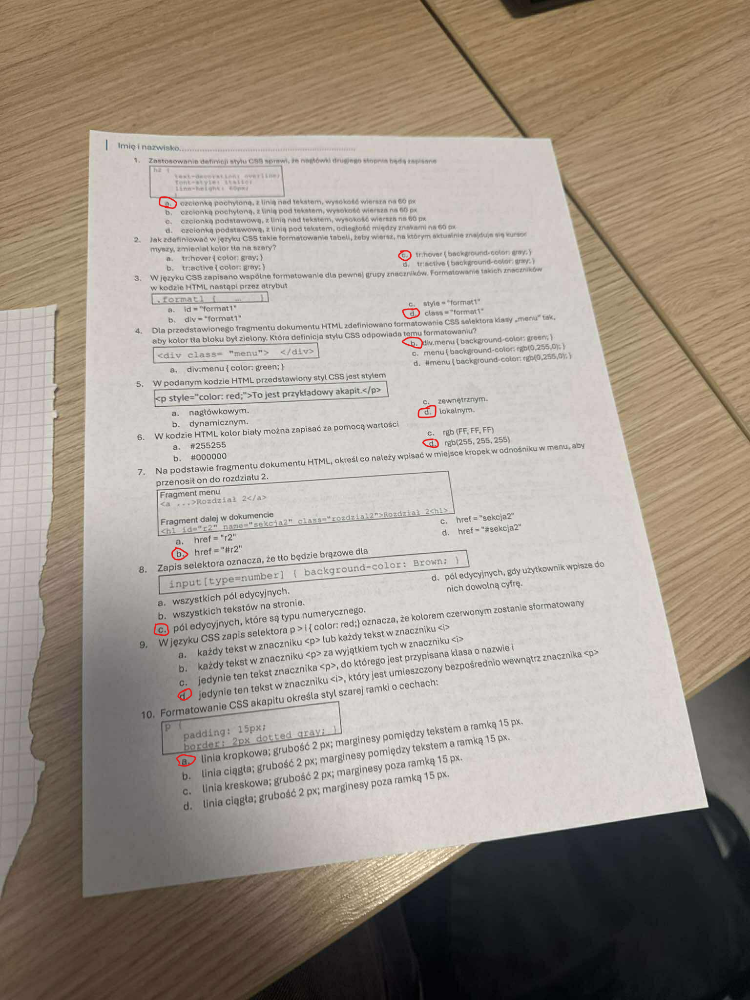

1. Zastosowanie definicji stylu CSS sprawi, że nagłówki drugiego stopnia będą zapisane:
h2 { text-decoration: overline; font-style: italic; line-height: 60px; }
czcionką pochyloną, z linią nad tekstem, wysokość wiersza na 60 px
2. Jak zdefiniować w języku CSS takie formatowanie tabeli, żeby wiersz, na którym aktualnie znajduje się kursor myszy, zmieniał kolor tła na szary?
tr:hover { background-color: gray; }
3. W języku CSS zapisano wspólne formatowanie dla pewnej grupy znaczników. Formatowanie takich znaczników w kodzie HTML nastąpi przez atrybut:.format1 { ... }
class = "format1"
4. Dla przedstawionego fragmentu dokumentu HTML zdefiniowano formatowanie CSS selektora klasy „menu" tak, aby kolor tła bloku był zielony. Która definicja stylu CSS odpowiada temu formatowaniu? <div class="menu"> </div>
.menu { background-color: green; }
5. W podanym kodzie HTML przedstawiony styl CSS jest stylem:
<p style="color: red;">To jest przykładowy akapit.</p>
lokalnym.
6. W kodzie HTML kolor biały można zapisać za pomocą wartości:
rgb(255, 255, 255)
7. Na podstawie fragmentu dokumentu HTML, określ co należy wpisać w miejsce kropek w odnośniku w menu, aby przenosił on do rozdziału 2.
<a href="...">Rozdział 2</a>
#r2
8. Zapis selektora oznacza, że tło będzie brązowe dla:
input[type=number] { background-color: Brown; }
pól edycyjnych, które są typu numerycznego.
9. W języku CSS zapis selektora p > i { color: red; } oznacza, że kolorem czerwonym zostanie sformatowany:
jedynie ten tekst w znaczniku <i>, który jest umieszczony bezpośrednio wewnątrz znacznika <p>
10. Formatowanie CSS akapitu określa styl szarej ramki o cechach:
p { padding: 15px; border: 2px dotted gray; }
linia kropkowa; grubość 2 px; marginesy pomiędzy tekstem a ramką 15 px.